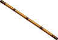
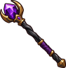
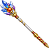

Fletching
At a Fletching Bench, make arrows from logs and feathers, and bows and fishing poles.
Level guide
| Level | Unlock | |
|---|---|---|
| 1 | White Arrows x10: 1 Logs, 1 Feather at a Fletching Bench | |
| 3 | Fishing Pole: 2 Logs, 1 Wool at a Fletching Bench | |
| 5 | Wooden Bow: 2 Logs, 1 Leather at a Fletching Bench | |
| 10 | Wooden Staff: 3 Logs at a Fletching Bench | |
| 15 |  | Bo: 2 Oak Logs at a Fletching Bench |
| 15 | Yellow Arrows x10: 1 Logs, 1 Feather, 1 Yellow Crystals at a Fletching Bench | |
| 20 | Fly Rod: 2 Birch Logs, 2 Feather, 1 Wool at a Fletching Bench | |
| 20 | Red Arrows x10: 1 Logs, 1 Feather, 1 Red Crystals at a Fletching Bench | |
| 20 | Wooden Crossbow: 2 Oak Logs, 1 Iron Bar at a Fletching Bench | |
| 25 | Crossbow: 2 Logs, 2 Iron Bar, 1 Leather at a Fletching Bench | |
| 30 | Blue Arrows x10: 1 Logs, 1 Feather, 1 Blue Crystals at a Fletching Bench | |
| 35 | Green Arrows x10: 1 Logs, 1 Feather, 1 Green Crystals at a Fletching Bench | |
| 40 | Gold Staff: 2 Pine Logs, 1 Gold Bar at a Fletching Bench | |
| 45 | Steel Bow: 2 Steel Bar, 2 Willow Logs, 1 Leather at a Fletching Bench | |
| 50 | Purple Arrows x10: 1 Logs, 1 Feather, 1 Purple Crystals at a Fletching Bench | |
| 55 |  | Dark Staff: 3 Yew Logs, 2 Slime Gel at a Fletching Bench |
| 65 | Silver Crossbow: 2 Yew Logs, 2 Silver Bar, 1 Leather at a Fletching Bench | |
| 75 |  | Lord's Staff: 3 Elder Logs, 1 Star Bar, 1 Uncut Diamond at a Fletching Bench |
| 75 | Star Rod: 2 Starbark Logs, 1 Star Bar, 1 Wool at a Fletching Bench |
Recipes
| Level | Makes | Needs | Where |
|---|---|---|---|
| 1 | 1 × | Fletching Bench | |
| 3 | 2 × | Fletching Bench | |
| 5 | 2 × | Fletching Bench | |
| 10 | 3 × | Fletching Bench | |
| 15 | 1 × | Fletching Bench | |
| 15 | Bo ×1 | 2 × | Fletching Bench |
| 20 | 1 × | Fletching Bench | |
| 20 | 2 × | Fletching Bench | |
| 20 | 2 × | Fletching Bench | |
| 25 | 2 × | Fletching Bench | |
| 30 | 1 × | Fletching Bench | |
| 35 | 1 × | Fletching Bench | |
| 40 | 2 × | Fletching Bench | |
| 45 | 2 × | Fletching Bench | |
| 50 | 1 × | Fletching Bench | |
| 55 | Dark Staff ×1 | 3 × | Fletching Bench |
| 65 | 2 × | Fletching Bench | |
| 75 | Star Rod ×1 | 2 × | Fletching Bench |
| 75 | Lord's Staff ×1 | 3 × | Fletching Bench |